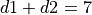
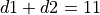
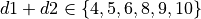

Throw Class¶
In Craps, a throw of the dice may change the state of the game. This
close relationship between the Throw class and CrapsGame class
leads us to design the Throw class
in detail, along with a rough stub for the CrapsGame class.
We’ll try to keep the Throw class as a parallel with
the Bin class in Roulette. It will hold a bunch of
individual Outcome instances.
We’ll look at the nature of a Throw in Throw Analysis.
This will lead us to look – again – at The Wrap vs. Extend Question. This is an important question related to how we’ll use a collection class.
In Throw Design we’ll look at the top-level superclass. There are a number of subclasses:
Once we have the throw defined, we can examine the outline of the game in Craps Game Design. This will show how game and throw collaborate. In Throw Deliverables we’ll enumerate the deliverables for this chapter.
Throw Analysis¶
The pair of dice can throw a total of 36 unique combinations. These are summarized into fifteen distinct outcomes: the eleven numbers from 2 to 12, plus the four hardways variations for 4, 6, 8 and 10.
In Roulette, the randomized positions on the wheel were called Bin instances
and each one had a collection of winning Outcome instances.
The Outcome objects were matched against the Bet objects
created by the player.
In Craps, however, the throws of the dice serve three distinct purposes:
They resolve any of the one-roll proposition bets.
They may also resolve any hardways bets.
They may also change the game state. This may also resolve the game bets.
We’ll look at each of these responsibilities individually.
One-Throw Propositions. Each Throw object can include a
collection of proposition Outcome instances. These are immediate
winners. This collection will be some combination of 2, 3, 7, 11, 12,
Field, Any Craps, or Horn. For completeness, we note that each throw
could also contain one of the 21 hop-bet Outcome instances;
however, we’ll ignore the hop bets.
Multi-Throw Propositions. A Throw object may resolve
hardways bets (as well as place bets and buy bets). There are three
possible conditions for a given throw:
Some hardways bets may be winners because the number was two equal dice.
Some bets may be losers because the number was two non-equal dice or a seven.
Some bets may remain unresolved because the dice were neither the target number, nor a seven.
This tells us that a Throw object may be more than a simple collection of winning
Outcome instances.
It seems sensible for a Throw object must also contain a list of losing
Outcome instances. For example, any of the two easy 8 rolls (6-2 or
5-3) would contain winning Outcome instances for the place-8 bet
and buy-8 bet, as well as a losing Outcome instances for a hardways-8
bet. The hard 8 roll (4-4), however, would contain winning Outcome instances
for the place-8 bet, buy-8 bet, and hardways-8 bet
Game State Change. Most importantly, a Throw object
can lead to a state change of the game. If the game ends, this will resolve
game-level bets. From the Craps Game Overview, we see that
the state changes depend on both the CrapsGame object’s state.
The rules identify the following species of Throw instance:
Craps. These are throws of 2, 3 or 12. In the come-out roll state, this is an immediate loss. In any other state, this is ignored. There are 4 of these throws.
Natural. This is a throw of 7. In the come-out roll state, this is an immediate win. In any other state, this is an immediate loss and a change of state back to the start of a game. There are 6 of these throws.
Eleven. This is a throw of 11. In the come-out roll state, this is an immediate win. In any other state, this is ignored. There are 2 of these throws.
Point. This is a throw of 4, 5, 6, 8, 9, or 10. In the come-out roll state, this establishes the point, and changes the game state. In any other state, this is is compared against the established point: if it matches, this is a win and a change of game state. Otherwise, no game state change occurs. There are a total of 24 of these throws.
The state change can be implemented by defining methods in CrapsGame class
that match the varieties of Throw. We can imagine that the
design for the CrapsGame class will have four methods: craps(),
natural(), eleven(), and point().
Each kind of Throw subclass will call the matching method of
the CrapsGame class, leading to possible state changes, and possible game bet resolution.
The game state changes lead us to design a hierarchy of Throw
subclasses. We can then initialize a Dice object with 36 Throw
objects, each of the appropriate subclass. When all of the subclasses
have an identical interface, this embodies the principle of
polymorphism. For additional information, see On Polymorphism.
In looking around, we have a potential naming problem: both a wheel’s Bin
and the dice’s Throw are somehow instances of a common
abstraction. Looking forward, we may wind up wrestling with a deck of
cards trying to invent a common nomenclature for all of these
randomizers. All three create random events, and this leads us to a possible
superclass for the Bin class and Throw class: a RandomEvent class.
Currently, we can’t identify any features that we can refactor up into the superclass. Rather than over-engineer this, we’ll hold off on complicating the design until we find something else that is common between our sources of random events.
The Wrap vs. Extend Question¶
Note that an instance of the Throw class is effectively a container for
a set of Outcome instances. We have the standard
Wrap vs. Extend question that we need to answer here.
Wrap. Each
Throwclass can have an internal frozenset ofOutcomeobjects.Extend. We base the
Throwclass on thefrozensetclass directly and add methods to add features.
We have a fairly large number of methods that are introduced in this design.
When we look back at Roulette, a Bin object had no impact on the state
of the game. In Craps, though, there’s a need for each Throw object
to update the current state of the game.
Both options seem sensible.
Lacking further information, we’ll focus on using a Wraps approach,
and define the Throw class
so it has a frozenset object as an attribute.
Throw Design¶
-
class
Throw¶ The
Throwclass is the superclass for the various throws of the dice. Each subclass is a different grouping of the numbers, based on the rules for Craps.
Fields¶
-
Throw.outcomes¶ A
Setof one-rollOutcomesthat win with this throw.We’ll include the two numbers showing on the dice because it makes it easy to produce helpful debugging output. In the long run, the numbers don’t really matter as much as the state changes.
-
Throw.d1 One of the two die values, from 1 to 6.
-
Throw.d2 The other of the two die values, from 1 to 6.
Constructors¶
-
Throw.__init__(self, d1: int, d2: int, *outcomes: Outcome) → None Creates this throw, and associates the given
SetofOutcomeinstances that are winning propositions.- Parameters
d1 – The value of one die
d2 – The value of the other die
outcomes – The various
Outcomeobjects for this throw. These are bets immediately resolved as winners.
Methods¶
-
Throw.hard(self) → bool Returns
Trueifd1is equal tod2. This helps determine if hardways bets have been won or lost.
-
Throw.updateGame(self, game: CrapsGame) → None -
This method calls one of the
CrapsGamestate change methods:craps(),natural(),eleven(),point(). This may change the game state and resolve bets.
-
Throw.__str__(self) → str An easy-to-read string output method is also very handy. A form that looks like
1,2works nicely.
Natural Throw Design¶
Constructors¶
-
NaturalThrow.__init__(self, d1: int, d2: int) → None¶ - Parameters
d1 – The value of one die
d2 – The value of the other die
Creates this
Throwinstance. The constraint is that . If the constraint is not satisfied, raise an exception.This uses the superclass constructor to add appropriate
Outcomeinstances for a throw of 7.
Craps Throw Design¶
Constructors¶
-
CrapsThrow.__init__(self, d1: int, d2: int) → None¶ - Parameters
d1 – The value of one die
d2 – The value of the other die
Creates this
Throwinstance. The constraint is that .
If the constraint is not satisfied, raise an exception.
.
If the constraint is not satisfied, raise an exception.This uses the superclass constructor to add appropriate
Outcomeinstances for a throw of craps.
Eleven Throw Design¶
-
class
ElevenThrow¶ ElevenThrowis a subclass ofThrowfor the number, 11. This is special because 11 has one effect on a come-out roll and a different effect on point rolls.
Constructors¶
-
ElevenThrow.__init__(self, d1: int, d2: int) → None¶ - Parameters
d1 – The value of one die
d2 – The value of the other die
Creates this
Throwinstance. The constraint is that . If the constraint is not satisfied, raise an exception.This uses the superclass constructor to add appropriate
Outcomeinstances for a throw of 11.
Point Throw Design¶
-
class
PointThrow¶ PointThrowis a subclass ofThrowfor the point numbers 4, 5, 6, 8, 9 or 10.
Constructors¶
-
PointThrow.__init__(self, d1: int, d2: int) → None¶ - Parameters
d1 – The value of one die
d2 – The value of the other die
Creates this
Throwinstance. The constraint is that . If the constraint is not satisfied, raise an exception.This uses the superclass constructor to add appropriate
Outcomeinstances for a throw of craps.
Craps Game Design¶
This is a stub class definition for CrapsGame.
This initial design contains the interface used by the Throw
class hierarchy to implement game state changes. In a later section,
we’ll provide a more complete definition.
Fields¶
-
GrapsGame.point The current point. This will be replaced by a proper State design pattern.
Constructors¶
-
CrapsGame.__init__(self) → None Creates this game. A later version will use a constructor to include the
Diceinstance and theCrapsTableinstance.
Methods¶
-
CrapsGame.craps(self) → None¶ Resolves all current 1-roll bets.
If the point is zero, this was a come out roll: Pass Line bets are an immediate loss, Don’t Pass Line bets are an immediate win.
If the point is non-zero, Come Line bets are an immediate loss; Don’t Come Line bets are an immediate win.
The state doesn’t change.
A future version will delegate responsibility to the
craps()method of a current state object.
-
CrapsGame.natural(self) → None¶ Resolves all current 1-roll bets.
If the point is
None, this was a come out roll: Pass Line bets are an immediate win; Don’t Pass Line bets are an immediate loss.If the point is non-
None, Come Line bets are an immediate win; Don’t Come bets are an immediate loss; the point is also reset to zero because the game is over.Also, hardways bets are all losses.
A future version will delegate responsibility to the
natural()method of a current state object.
-
CrapsGame.eleven(self) → None¶ Resolves all current 1-roll bets.
If the point is
None, this is a come out roll: Pass Line bets are an immediate win; Don’t Pass Line bets are an immediate loss.If the point is non-
None, Come Line bets are an immediate win; Don’t Come bets are an immediate loss.The game state doesn’t change.
A future version will delegate responsibility to the
eleven()method of a current state object.
-
CrapsGame.point(self, point: int) → None¶ - Parameters
point (integer) – The point value to set.
Resolves all current 1-roll bets.
If the point was
None, this is a come out roll, and the value of the dice establishes the point.If the point was non-
Noneand this throw matches the point the game is over: Pass Line bets and associated odds bets are winners; Don’t Pass bets and associated odds bets are losers; the point is reset to zero.Finally, if the point is non-
Noneand this throw does not match the point, the state doesn’t change. Come point and Don’t come point bets may be resolved. Additionally, hardways bets may be resolved.A future version will delegate responsibility to the current state’s
point()method to advance the game state.
-
Throw.__str__(self) → str An easy-to-read string output method is also very handy. The stub version of this class has no internal state object. This class can simply return a string representation of the point; and the string
"Point Off"whenpointisNone.
Throw Deliverables¶
There are eleven deliverables for this exercise.
A stub class for
CrapsGamewith the various methods invoked by the throws. The design information includes details on bet resolution that doesn’t need to be fully implemented at the present time. For this stub class, the change to thepointvariable is required for unit testing. The other information should be captured as comments and output statements that help confirm the correct behavior of the game.The
Throwsuperclass, and the four subclasses:CrapsThrow,NaturalThrow,ElvenThrow,PointThrow.Five classes which perform unit tests on the various classes of the
Throwclass hierarchy.